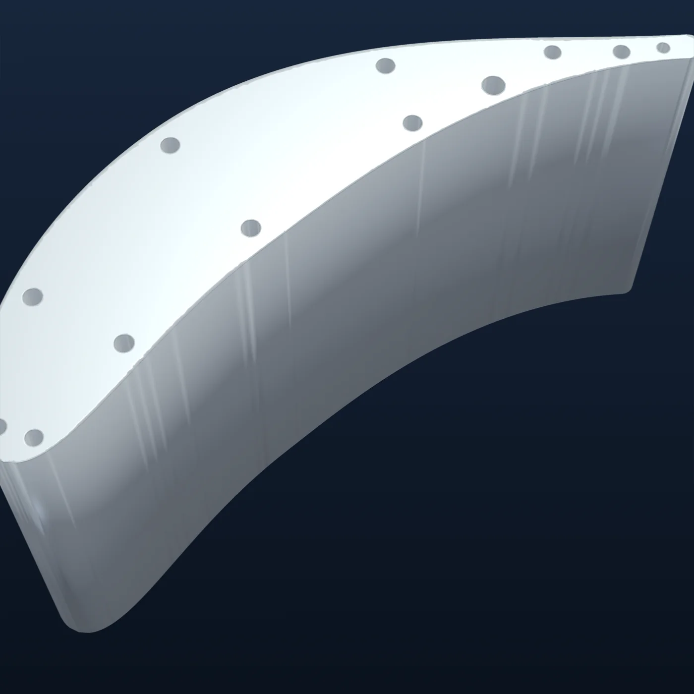
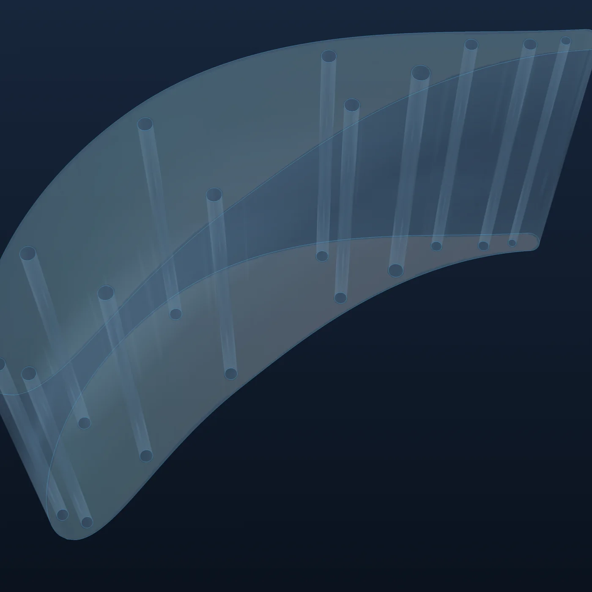
一
AI 独立设计出一片带内部冷却结构的涡轮叶片
输入一份设计任务书，AI 自己完成叶型、内部冷却结构和仿真复核，交出可以直接三维打印的叶片模型。用的是公开的通用大模型，没有做专门训练。能力来自世界，不来自模型。
- 1–2 小时从任务书到模型
- 全程无人干预
ENGINEERING · RECURSIVE SELF-IMPROVEMENT
示意动画：候选方案被打分、被淘汰，再进化
01我们的判断
软件世界天然给了 AI 一样东西：立刻知道对错的环境。编译器会报错，测试会失败，程序跑起来就有结果。AI 每做一步都能得到反馈，犯错几乎不花钱。
硬件世界没有这样的东西。要知道一片涡轮叶片设计得对不对，得算流动、算传热、算应力，最后还得做试验，一轮下来以月计、以百万计。
| 软件世界 | 硬件世界 | |
|---|---|---|
| 对错反馈 | 编译与测试，立刻知道 | 仿真与试验，以月计 |
| 犯错代价 | 几乎不花钱 | 以百万计 |
| AI 的角色 | 独立完成任务，开始改进自己 | 大多停留在画图助手和替代仿真的小模型 |
所以瓶颈不在模型，在世界。差的是一个能让 AI 犯错、被打分、被纠正的地方。
02为企业构建 Harness
大模型负责理解需求、推理和生成方案。Harness 负责其余的一切：拆解任务、组织工具、管理上下文、处理反馈。它把通用智能接入企业真实的工具、规范和数据，让 AI 从回答问题走向把工作做完，并且做对。
大模型理解目标、进行工程推理；Harness 拆解任务、规划流程，组织生成多个候选方案。
调度几何建模、仿真分析、参数优化等专业工具，由计算引擎与求解器完成真实的工程计算。
先按工程规则与约束初筛，再由世界模型验证性能与极限边界，评价优劣并定位问题。
把成功经验与失败原因沉淀为可复用的知识，逐步改进系统自身的决策和执行机制。
产品形态
用户输入任务书，拿到经过验证的设计和报告。底层整合通用大模型、工业世界模型、专家模型、Harness 与求解器。
03工业世界模型
它不是一个仿真软件。四层物理判断从下往上越贵、越接近真实，贵的一层校准便宜的一层。AI 大部分时间在便宜的层里快速试错，只在必要时才去贵的层求证。
公开试验数据与客户实测，世界的最终标尺
流动、传热、应力一起算，证明方案在计算上成立
一维物理网络与工程关联式，AI 搜索方案的主战场
几何合法、可制造、不违反硬约束
AI 在这里犯错的代价是几秒到几小时，
不是几年和几亿。
每一层都给 AI 打分，并告诉它错在哪。
每个判断带着可信度，每个方案留下痕迹，设计一改，旧结论自动作废。缺少依据的问题，明确回答“不可评价”。
公开试验数据与客户实测不断把世界往真实拉，每一次研发都让它更准。
04递归自我改进
之所以叫自我改进而不是优化，是因为每转一圈，变强的不只是那个方案，还有 AI 手里的工具和它所处的世界本身。
05已经做到的事
我们从高端装备里最难的零件之一开始：涡轮冷却叶片。燃气温度高于金属熔点，叶片靠内部冷气才能活着。做成了它，别的零件的设计链大多是它的子集。


一
输入一份设计任务书，AI 自己完成叶型、内部冷却结构和仿真复核，交出可以直接三维打印的叶片模型。用的是公开的通用大模型，没有做专门训练。能力来自世界，不来自模型。
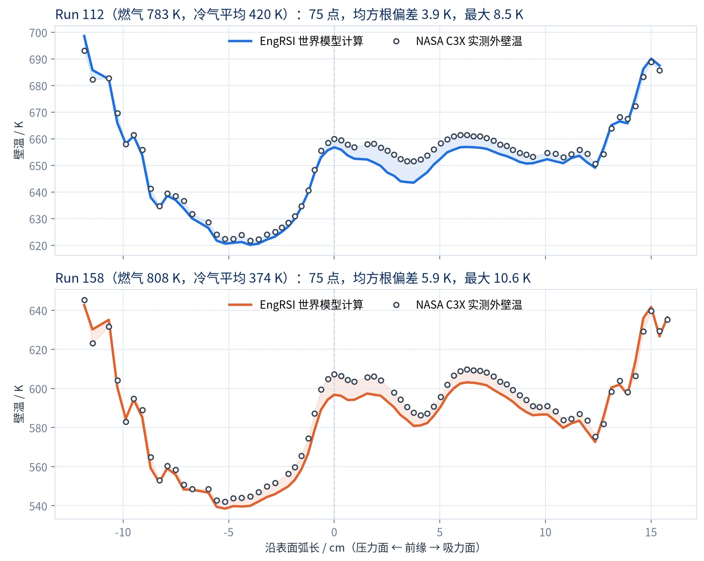
二
世界模型用 NASA 公开的涡轮叶片试验数据校准：同一组试验条件下，算出的金属温度与实测相差只有几度。目前对上的是从边界条件到金属温度这一段，燃气侧换热的对照是下一步。
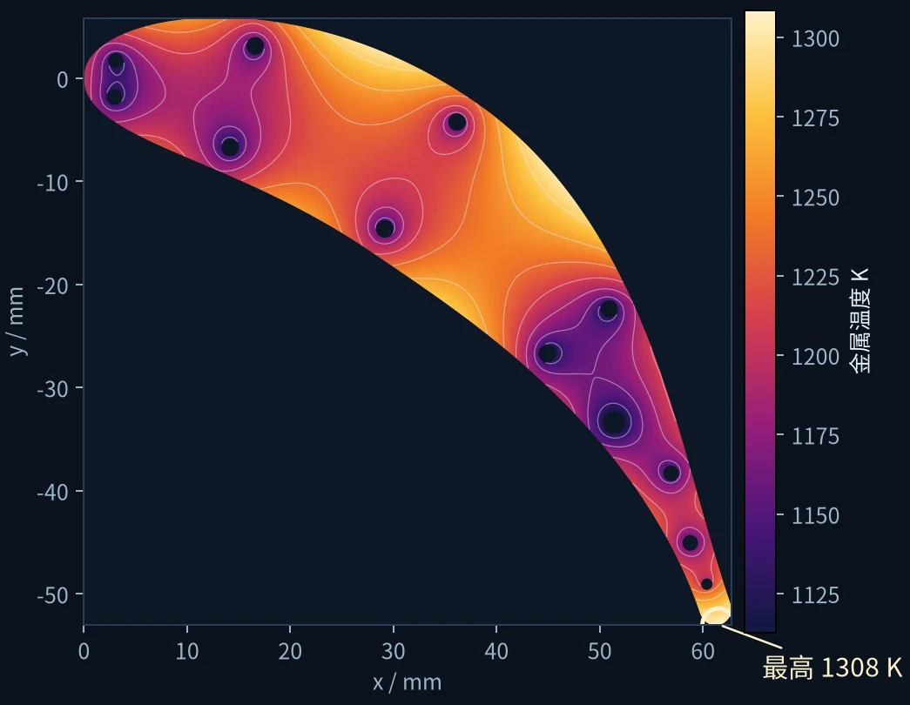
三
工具不够用时，AI 会自己写一个新工具，在受限环境里运行并继续设计，经工程师审核后成为正式能力。设计一改，依赖旧设计的结论自动作废。
在更难的起飞工况上，AI 算了几轮后报告：只靠这种冷却方式达不到许用温度，差多少，依据是什么。
一个会说“做不到”的系统，
它说“做到了”的时候才值得信。
尚未做到的事
06与工业界深度合作
EngRSI 的核心框架不含任何叶片专属逻辑。换一套部件知识和仿真工具，就是另一个部件。我们和企业一起，把各自最核心的工程问题做成可验证的世界。
涡轮冷却叶片，第一圈已跑通
燃烧与热防护
热管理
耐压结构
配模与报价
合作规划 · 盐城良工建筑模板
从一张结构图到一份能下单的模板方案，今天主要靠工程师的经验和时间。规则和算术交给代码，人工智能负责读懂任务、写清方案，模板关系施工安全，工程师的签字不会取消。
以上为合作目标，将用良工的历史项目逐项验收。每一块板都能说出它为什么在那里，每一个数字都能追溯到一条公式或一条规则。
怎样和我们合作
从研发或生产中最痛的一道工序开始。
整理企业的规格、经验、软件与历史数据。
让 AI 在企业自己的约束下工作并被验证。
与工程师的真实成果逐项对比，用数字说话。
每一次使用都沉淀为下一次的能力。
07团队合作伙伴
产业
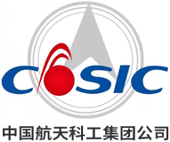
航天科工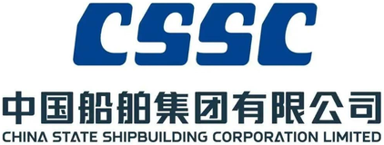
中国船舶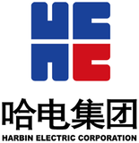
哈电集团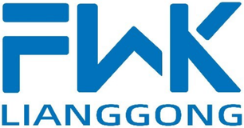
盐城良工建筑模板有限公司高校与学会
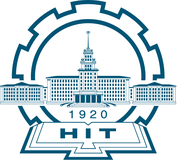
哈尔滨工业大学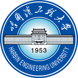
哈尔滨工程大学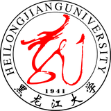
黑龙江大学08团队过往成果
团队成果成功应用于中国航发、中国航天科工、中国船舶、哈电集团等多个头部企业及其下属科研院所，经权威机构鉴定认为成果总体达到国际先进水平。
09关于我们
技术团队来自哈尔滨工业大学能源学院航空发动机研究所，长期深耕高端装备研发。我们相信，高端装备的研发不再是人在工具之间搬运结果，而是 AI 在一个越来越真的数字世界里进化出产品，由人决定要什么、判断可不可信。